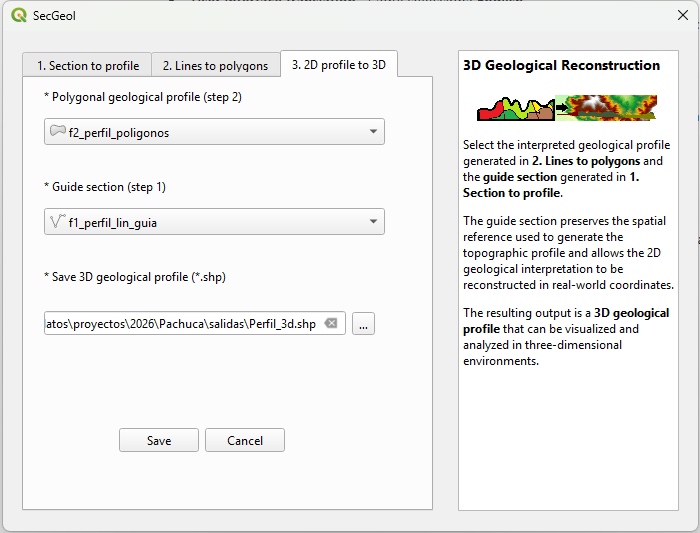
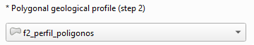
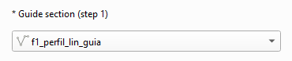

Phase 3. General view of the tool

Selection of the geological polygon profile
In this phase, the geological polygon profile generated in Phase 2 is used. Before continuing, it is recommended to verify that the field corresponding to the geological units has been properly completed in the attribute table.

Selection of the guide section

In this section, select the guide section generated during Phase 1, identified by the suffix _guia.
The guide section preserves the spatial reference required to reconstruct the geological profile, originally interpreted in local distance and elevation coordinates, at its corresponding position in three-dimensional space.
Output 3D geological polygon profile
As a result, SecGeol generates a three-dimensional polygon vector layer that preserves the interpretation and attributes of the geological profile. Its vertices are reconstructed in real-world X, Y, and Z coordinates using the guide section.
The resulting layer can be incorporated into three-dimensional scenes for visualization and analysis in applications compatible with 3D geometries, such as QGIS, ArcScene, or Leapfrog.